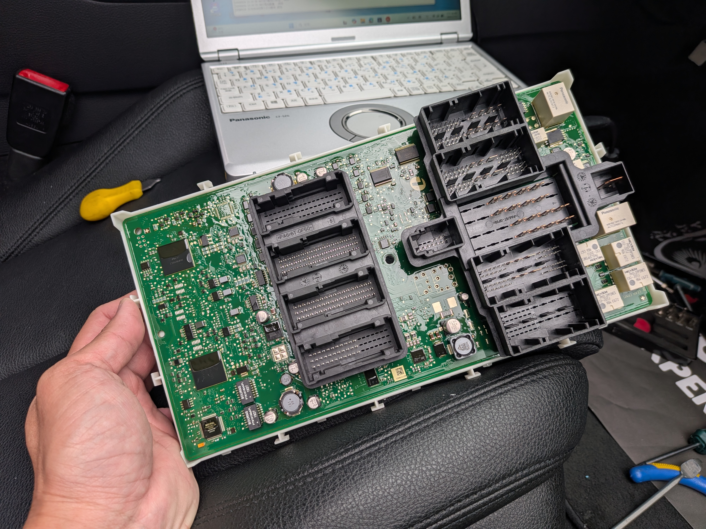

Owner Safety Guide
汽車鑰匙需要先準備哪些車況資訊？詢問準備指南
遇到鑰匙遺失、只剩一支、智慧鑰匙感應不到或車輛無法啟動時，重點是先把車況資訊整理清楚，讓專業人員判斷安全可行的處理方向。

示意照片僅呈現車況評估情境。
先確認狀態
車輛能否開門、是否可啟動、儀表是否有鑰匙或電力提示，這些資訊會影響後續判斷。
準備安全照片
外觀、儀表、鑰匙與停放環境即可。避免提供車牌、證件、住址或私人資料。
不要反覆嘗試
若車輛已無法啟動或感應不穩，反覆操作可能讓電力更低，先詢問再處理比較穩妥。
車主可以先傳給 ProCore 的資訊
- 車款、年份與所在地區，不需要公開精確私人地址。
- 目前有幾支鑰匙、是否全部遺失、是否還能開門或啟動。
- 儀表提示、鑰匙外觀、停放環境與是否方便到場評估。
- 若是二手車或拍賣車，補充交車時拿到的鑰匙數量與目前狀況。
相關服務入口
常見問題
汽車鑰匙問題一定要先研究處理方式嗎？
車主先整理車況資訊即可。請提供車款年份、鑰匙狀態、所在地與現場照片，ProCore 會依車況判斷是否適合到場評估或改用其他安排。
詢問前要傳哪些照片比較安全？
可傳車外觀、儀表提示、鑰匙外觀與停放環境，避免拍到車牌、住家門牌、證件號碼或任何私人資訊。
為什麼詢問時要先提供車況照片？
車況照片能協助判斷車型、停放環境、儀表訊息與鑰匙狀態，讓 ProCore 更快回覆適合的評估方向。